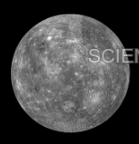

Mercury
Mercury is the closest planet to the Sun and the smallest in the solar system.
| Distance from Sun | 57.9 million km |
|---|---|
| Orbital Period | 88 days |
| Moons | None |
| Atmosphere | Oxygen, Sodium |
Mercury has extreme temperature variations.
A Digital Encyclopedia of Our Solar System
Mercury is the closest planet to the Sun and the smallest in the solar system.
| Distance from Sun | 57.9 million km |
|---|---|
| Orbital Period | 88 days |
| Moons | None |
| Atmosphere | Oxygen, Sodium |
Mercury has extreme temperature variations.